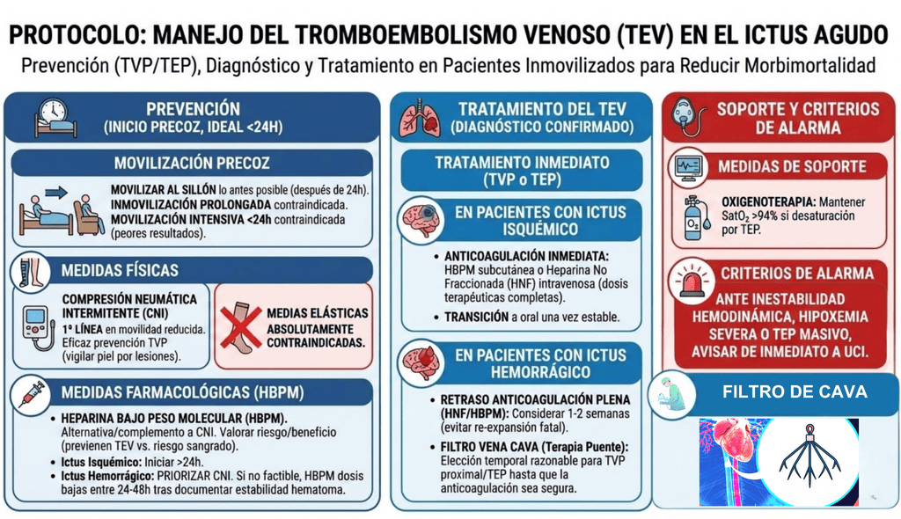

El tromboembolismo venoso (TEV), que incluye la trombosis venosa profunda (TVP) y el tromboembolismo pulmonar (TEP), es una complicación frecuente y grave en el paciente con ictus inmovilizado. Su prevención y tratamiento tempranos son esenciales para reducir la morbimortalidad.
Prevención del tromboembolismo venoso
Debe iniciarse lo antes posible, idealmente en las primeras 24 horas.
-
Movilización precoz: El paciente debe movilizarse al sillón tan pronto como sea clínicamente posible (después de las primeras 24 horas). Se desaconseja el reposo prolongado y la inmovilización absoluta, pero la movilización muy temprana o intensiva en las primeras 24 horas está contraindicada por peores resultados clínicos.
-
Medidas físicas:
-
Compresión neumática intermitente (CNI): Es la medida recomendada de primera línea en pacientes con movilidad reducida. Es eficaz previniendo la TVP, aunque requiere vigilancia de las extremidades por un leve incremento en el riesgo de lesiones/úlceras cutáneas.
-
Medias de compresión elástica: absolutamente contraindicadas.
-
-
Medidas farmacológicas:
-
Heparina de bajo peso molecular (HBPM): Alternativa razonable a la CNI o medida complementaria para la profilaxis del TEV en pacientes inmovilizados. Debe iniciarse según el control del riesgo hemorrágico (habitualmente pasadas 24 horas del ictus isquémico) valorando individualmente el riesgo/beneficio, ya que previenen el TEV pero conllevan un mayor riesgo de sangrado intracraneal y extracraneal.
-
En Ictus Hemorrágico se prioriza la CNI. Si esta no es factible o no está disponible, se puede iniciar profilaxis con dosis bajas de HBPM entre las 24 y 48 horas posteriores al inicio de la hemorragia, siendo recomendable documentar antes la estabilidad del hematoma mediante neuroimagen para no incrementar el riesgo de sangrado.
-
Tratamiento del TEV (TVP o TEP)
Ante un diagnóstico confirmado, el tratamiento debe iniciarse de inmediato.
- En pacientes con Ictus Isquémico:
- Anticoagulación: Iniciar de inmediato con HBPM subcutánea o Heparina No Fraccionada (HNF) intravenosa a dosis terapéuticas completas.
- Transición: una vez estabilizado, pasar a anticoagulante oral para tratamiento prolongado.
- En pacientes con Ictus Hemorrágico:
- Retraso de la Anticoagulación: Se debe considerar retrasar el tratamiento terapéutico completo con HNF o HBPM durante 1 a 2 semanas tras el inicio de la HIC para evitar la re-expansión fatal del hematoma.
- Filtro de Vena Cava Inferior (Terapia Puente): En
estos pacientes con HIC aguda y una TVP proximal (o TEP)
que aún no son candidatos para recibir anticoagulación
plena, el uso temporal de un filtro de vena cava
recuperable es la medida de elección razonable como
"puente" hasta que la anticoagulación sea segura.
Medidas de Soporte y Criterios de Alarma
-
Oxigenoterapia: Mantener saturación de O₂ >94% si existe desaturación asociada al TEP.
-
Criterios de alarma: Ante inestabilidad hemodinámica, hipoxemia severa o sospecha de TEP masivo, se debe avisar de inmediato a la Unidad de Cuidados Intensivos (UCI) para soporte avanzado.
Ante inestabilidad hemodinámica, hipoxemia
severa o TEP masivo, avisar de inmediato a UCI.
Volver al índice